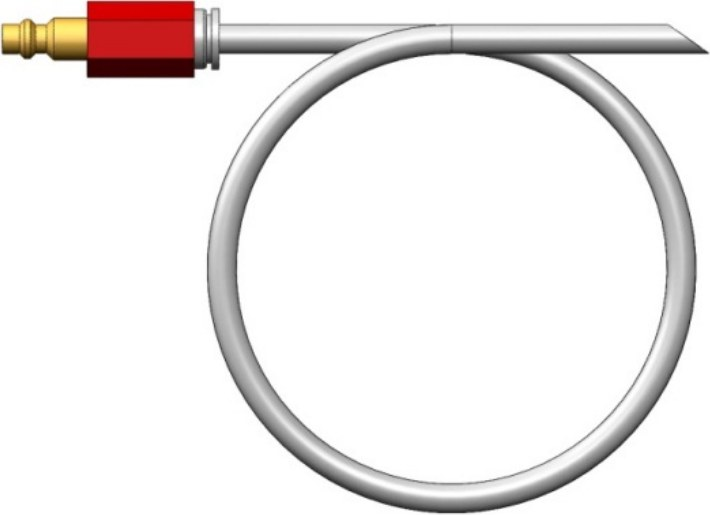
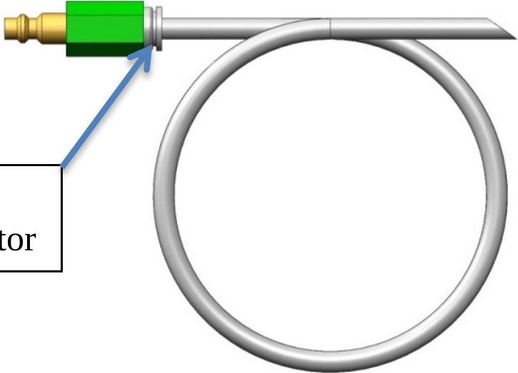
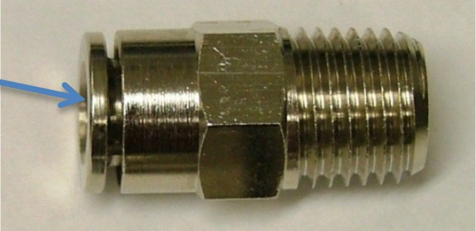
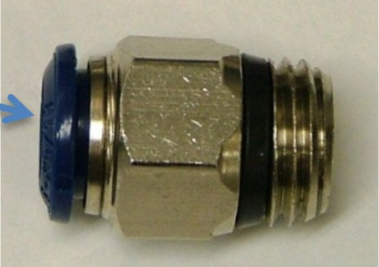

Doc no. MOC-TSB-13-04 // Vol. 13 No. 04 // Mar 11, 2013 // Transmission
Dipstick Service Hose Changes
9477794841
MOC has made improvements to the Dipstick Service Hoses used on the Dipstick Service Adapter (Part No. 94777). We have increased the length by 24" of both of these service hoses. Additionally, we replaced the hose connector on the Green Service hose (Part No. 94841).
What's new
To tell the old hose connector from the new one on the Green Service Hose (94841), look at the tip of the hose connector: the old connector has a blue plastic tip, the new connector has a metal tip.
Contact
For more information, contact the Machine & Equipment Department at 866.244.6621.




Part numbers
| Part No. | Description | Notes |
|---|---|---|
| 94839 | Hose, Dipstick Service, 1/4" (Red) | |
| 94841 | Hose, Dipstick Service, 5/16" (Green) MOC | |
| 94777 | Dipstick Service Adapter |